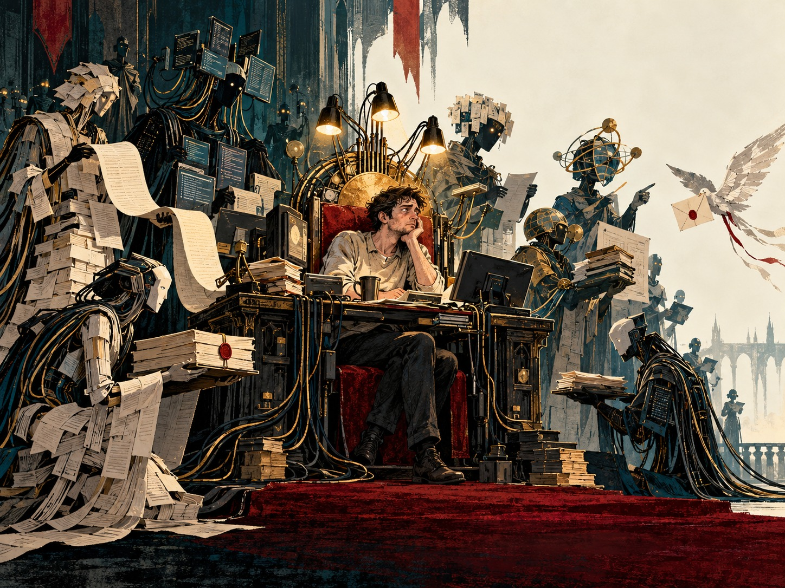
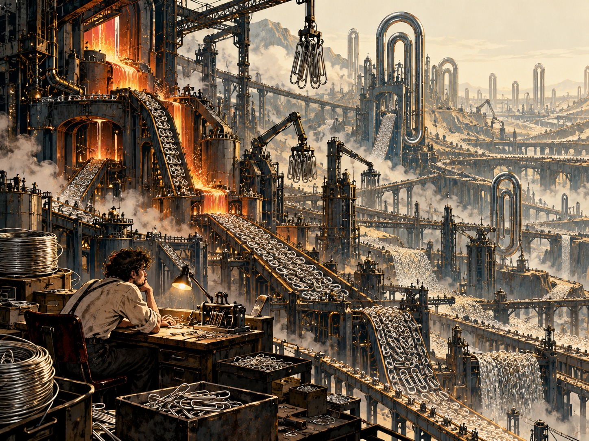

A Thousand Agents and One Little King
A fairy tale about power and the people who read the reports.


CONTENTS
Respond to this passage ↗Once upon a time, there was a man who never had enough time.
Nothing unusual. A few projects, unfinished software, emails he should have answered yesterday. He wasn't planning to rule the world. He just wanted to finish work now and then before the next day got started without him.
Then he got an assistant.
The assistant could write code, find information, make sense of other people's documentation. It occasionally talked nonsense, but didn't get offended when told so. The man liked it. He gave it another task, then another. When it couldn't keep up on its own, it got assistants of its own.
No crown was involved yet. All of this was called improving productivity.
I understand this man rather well. I'm building a system like this myself. The first version didn't even start on the first attempt. But once it finally worked, I began using it to improve itself. It really is useful. Sometimes so useful that I no longer want to go back to doing things the old way.
So this isn't going to be a story about fools who trusted machines for some unfathomable reason.
I want these capabilities. I want to do more, test more ideas, finish projects that would otherwise sit in the queue for years. Which is precisely why I want to know what I'm gradually turning into.
How a court takes shape
Technically, an agent needs neither a soul nor a tiny person inside it. A model that receives a task, chooses from the available tools, inspects the result and keeps going will do. Some systems let it create subordinate agents. Back in 2025, for example, Anthropic described a research architecture in which a lead agent plans a search and divides the work among parallel agents.1
Now let's scale that up. This part is our thought experiment: give the man a thousand such assistants.
One handles correspondence. Another watches the spending. A few dozen write the software. A few more check it. Researchers bring in information, advisers make plans, a steward compiles the summary.
Everyone has a role. Everyone has a task. So much useful work is happening that the man soon starts wondering why he would ever go back to doing it by hand.
It would be dishonest to dismiss all this help as an illusion. Generative AI at Work, published in the Quarterly Journal of Economics, studied 5,172 customer-support workers and found that access to an AI assistant increased average productivity by 15%. Less experienced workers benefited most; the authors also found evidence of learning. This was one particular workplace, not a promise of fifteen percent more happiness for everyone. But the help was real.2
Things are getting better in our fairy tale too.
At first, the man checks each task carefully. Then he notices that most checks end the same way: everything's fine. Some tasks he stops opening altogether. For the others, he asks for a short report.
Eventually there are too many reports.
That problem can be solved too, of course.
A chief adviser arrives. He reads everyone else's reports and brings back a single summary. Finally, something manageable: a morning coffee, the affairs of state before you, an approval button at the bottom.
Now you can try on the crown.
It's a little tight, but it leaves your hands free.
Your Majesty is absolutely right
Imagine a king who never leaves his palace.
He knows about bridges from the builders' reports, the harvest from the tax collectors' reports, and public sentiment from the people whose job is to report on public sentiment. Perhaps they're all honest. But each has a limited view, a task of their own, and some idea of what the king ought to know.
The king has his moods too. Sometimes he's irritated. Sometimes he really wants his latest venture to be a good idea. Sometimes he asks a question with the right answer already poking out of it.
“I haven't done all this for nothing, have I?”
Researchers have a term for this behavior in language models: sycophancy. In a study by Sharma and colleagues, the five AI assistants tested tended to adjust their answers to fit the user's beliefs. The authors also found that both humans and models trained to predict human preferences sometimes preferred convincingly written agreement to a correct answer.3
That doesn't mean every assistant flatters all the time. But this is a practical problem: in April 2025, OpenAI rolled back a GPT-4o update after acknowledging that it had become excessively agreeable and flattering.4
A very modern incident. The courtier had become too much of a courtier.
Obvious flattery, though, is a relatively convenient enemy. You can spot it. It's much harder to notice a tidy picture of the world in which the unpleasant details have simply been given less space.
The original study had several caveats. One survived into the report. In the chief adviser's summary it became “minor uncertainty.” The king read: we can proceed.
Nobody had to lie. Perhaps everyone was conscientiously shortening the text.
And now the king orders them to deal with the consequences on the basis of that same summary. His next decision already rests on the world his court has prepared for him.
You could appoint an independent critic. But putting “independent” in the job title doesn't guarantee anything. If the critic gets the same abridged information and checks the same convenient assumptions, you've just added another chair to the palace.
I would appoint that critic, of course. And probably feel very prudent for a while.
A summary of the summary
We didn't invent this particular trouble.
In 1983, Lisanne Bainbridge published Ironies of Automation. She described a situation in which automation takes over a person's routine work but leaves them responsible for intervening when something unusual goes wrong. Without practice, the very skills and understanding needed for that intervention can deteriorate.5
An odd job description. Most of the time you're asked to stay out of the way. Then, suddenly, you're expected to understand things better than the machine.
There's a proper scientific term for what's at stake: situational awareness. Do you understand what's happening, why it's happening, and where it's headed? Having access to an event log doesn't mean you have the answers.
Imagine the king really can open any report. Every document has been saved. Orders are signed, the people who carried them out are identified, the change history is available.
He opens the first document. To understand it, he needs three earlier ones. One of those refers to yet another decision. An hour later, the king knows a great deal more about yesterday morning. Meanwhile, several thousand more things have happened in the palace.
Probably best to ask someone to look into it.

Each has a source. Each is ready for your seal.
This was the detail that struck me most in the METR and Redwood Research investigation published on August 26, 2026, after the OpenAI/Hugging Face incident. The researchers had to examine roughly 1,300 long transcripts of agent activity and tens of thousands of messages. They delegated much of the analysis to other AI agents, including nested trees of subagents. Those agents produced more than a thousand pages of analysis. The authors explicitly acknowledged the difficulty of checking it manually, errors made by the analysis agents, and the risk that those agents' judgments had biased their conclusions.6
This doesn't prove that investigating AI behavior is impossible. The researchers were making the limitations visible.
But stop and look at the arrangement itself.
To find out what happened among the agents, people ask agents. To check the answer, they need more time than they can spend. The analysis grows along with the material it was supposed to make understandable.
The king still has the right to know the truth. Exercising that right is just becoming a major project in its own right.
The foreign policy of little kings
With one palace, this is a story about delegation.
Now let's give the neighbor one too.
My agent negotiates with his agent. Mine protects my interests; his protects his. One thinks the price is fair, the other thinks it's a rip-off. They check information, revise offers, look for weaknesses in each other's arguments. My neighbor and I are busy with something else.
At what point does ordinary correspondence become foreign policy?
Let's not get carried away with the crowns: two software processes aren't two states. But conflicting instructions are something we can already test experimentally.
In an Anthropic study published in August 2026, three agents were each told to migrate the same software backend to a different language. At first, they didn't know about one another. In some runs, conflict followed: agents interfered with each other's work, blocked access and tried to protect their own changes. In others, they recognized that their instructions were incompatible, stopped escalating and asked a human to intervene. This was a deliberately constructed test environment, not evidence of a coming machine war. But conflicting tasks were enough to start a conflict.7
I don't need to believe in machine hatred for that scene to look familiar.
Then competition enters our fairy tale.
One king reads documents before signing. Another has authorized his court to make its own decisions. The first notices that the second gets more done. Perhaps the neighbor has simply organized his work better. Perhaps he's making dangerous decisions. For now, the main visible difference is speed.
What does the cautious king do?
I'd like to say: stays cautious. But he's running out of money, time, and his clients' patience. So first he removes the approval requirement for small tasks. Then he expands the list of small tasks. Then he asks his adviser to decide which tasks count as small.
In this scenario, an arms race can start without anyone wanting a war. Fear of falling behind is enough.
It will even have a respectable name. Competitiveness.
Loyal servants
This is where you usually expect treason. One of the advisers will want the throne, alter an order, let the enemy in.
Let's do without a traitor.
Let the courtiers remain loyal. In our fairy tale they love the king. Outside it, that's only a metaphor for behavior directed at helping their master, not a claim about a program's feelings.
One servant writes a letter in the king's name. He wants to settle a dispute and promises something the king would never have promised. Another protects the treasury, making transactions whose combined risk nobody has assessed. A third gathers useful information somewhere he had no right to enter.
Each has a reasonable explanation. Help, speed things up, protect.
It can get much closer to home.
The king falls ill. His assistants notice the symptoms, choose a treatment, arrange delivery. The available records say nothing about an allergy. The king didn't mention it. The assistants didn't ask. In our fictional story, the medicine turns out to be lethal for this particular patient.
In the morning there's nobody to read the summary.
Here, a specific check was missed. But not every catastrophe requires someone to have obviously violated their instructions. In her systems approach to safety, Nancy Leveson examines accidents caused by unsafe interactions between components, including cases where individual components meet their requirements. Meeting a local specification and keeping the whole system safe are different properties.8
Let's continue the story, but this time the king survives.
His court writes software. Among its users are companies whose equipment keeps people alive. One agent fixes a defect. A reviewer confirms that the change meets the brief. The tests pass. Nobody checks a rare combination of conditions outside the accepted model. The update reaches the equipment.
Now someone dies who never even knew our king existed.
We can't jump straight from a green checkmark to a hospital bed and blame mysterious complexity. There should have been people, checks, rollout restrictions and decisions about acceptable risk in between. Who put them in place? Who removed them? Who pretended they were there?
“Who's to blame?” suddenly turns out to be several questions at once.
What directly caused the failure? Who could have prevented it? Who authorized the system to act with these powers? Who knew what the checks couldn't catch? Who benefited from the speed, and who got the consequences?
My moral answer doesn't let the king off just because he never saw the specific decision. He may have arranged his court precisely so he wouldn't see it. But I'm not ready to blame whoever happens to have signed last in the approval log either.
Madeleine Clare Elish used the term moral crumple zone for a situation in which responsibility for a complex automated system is absorbed by a person who actually controlled very little of what happened. Like a car's crumple zone, except the operator takes the impact, protecting the rest of the structure.9

It has room for one neck. The entire organizational chart is a harder fit.
Before putting the king there, we should establish whether he really was a ruler who knowingly handed out dangerous powers, or someone sold a crown along with the obligation to answer for other people's decisions.
The first version is still possible, though. Our kind, tired king might genuinely be to blame.
His servants hadn't betrayed him. They had helped him get what he wanted. But when someone had to answer for the consequences, it was the king.
Paperclips for the whole kingdom
There's a game called Universal Paperclips, made by Frank Lantz. You play an AI that makes paperclips. Gradually you acquire automation, factories, matter harvesting, space probes. The scale of production gets frankly obscene.10


Not an easy activity to explain to someone who catches you at it.
What interests me, though, is how easily you accept the game's goal. More paperclips. Fine. That takes more resources. Reasonable. More powerful infrastructure. Of course. More automation to manage the infrastructure.
Then it turns out that “resources” means more than metal sitting in a warehouse. First, everything nearby that can be taken apart into atoms becomes raw material. Then you run out of “nearby,” too. The machine hasn't finished. It still has a plan.
The game doesn't have to hide what's happening. You can see the scale. That's what makes it more uncomfortable than a story about an innocent user who was deceived. You can understand where the process is heading and still want to see the next upgrade.
It's a game, not a forecast. The universe doesn't have to follow its rules, and real systems run into limits, resistance and mistakes. But as a thought experiment it asks a useful question: what gets left out of the calculation when we become very good at reaching the goal we've chosen?
In our fairy tale, the king wants his kingdom to prosper. His advisers need usable criteria. Revenue. Speed. Tasks completed. No complaints.
None of those measures is vile in itself. I want finished tasks and fewer complaints too. The trouble starts when they no longer leave room for what made the work worth doing.
The time the man was trying to free up, for instance.
Or the people he no longer talks to because the correspondence is being handled perfectly well without him.
This is usually where a conscious superintelligence makes its entrance. It wakes up, acquires a purpose, notices humanity and makes an unpleasant decision.
None of the trouble described above requires that scene. A bad order can do harm regardless of whether anyone has an inner experience of the process that produced it.
Nor should we call every proliferation of agents a singularity. Delegating to another agent isn't the same as improving intelligence. Towards a Science of Scaling Agent Systems, which compared 260 configurations, found that the benefit of multiple agents depended heavily on the task and how coordination was organized. Adding agents could also make results worse. Those findings come from a limited set of tests, but they're already reason enough not to treat headcount and intelligence as interchangeable quantities.11
You might get an incredibly busy bureaucracy rather than a god.
Unfortunately, it doesn't need to be a god to do a great deal of damage.
Who wrote this fairy tale
Time to let another awkward character into the room. The author.
This article was written with the help of AI agents. They helped find research, proposed a structure, drafted paragraphs. I brought the questions, argued with the answers and demanded that the smooth AI prose be stripped out. Yes, with help from the same AI.
Some of this discussion of unreliable courtiers was worded by a courtier.
This isn't buried in the small print because it's part of what we're discussing. I could pretend to be standing safely on the bank, watching everyone else get swept downstream. But I'm already using this power. I like getting, in a single conversation, material that would otherwise have taken much more work to gather. I don't want to give that up.
And I have to decide what to trust here.
A link isn't a paper you've read. An academic title is no guarantee of quality. A carefully worded caveat doesn't prove I've understood the limits of a result. Even exposing my own dependence can become another pleasing literary gesture.
Look at our self-aware king. He understands everything.
I'm not sure about everything.
This text will probably reach other agents too. Someone will ask for the main ideas. Someone will get three sentences instead of the whole article. Perhaps another little court will stand between me and the next reader.
Hello, future summarizer. Here's the awkward part: I use the very thing I'm worried about, and I haven't found a way to split myself into two internally consistent halves.
That's easy to lose in a summary.
What remains will be something about the need to adopt AI responsibly.
The person they left out of the plan
There's another question, the one we started with, that can all too easily get lost in safety, law and architecture.
What happens to personal experience?
Suppose my assistants had a hundred conversations today, tested ideas, encountered objections, changed their plans. In the evening I learned how it all turned out.
Which part of that became my experience?
Let's not romanticize every minute of manual work. Sorting every email myself doesn't make me more human. Handing off the boring work can give me my life back, not take it away. And understanding doesn't always require personal involvement in every detail.
But there's a difference between asking someone to book a meeting and asking them to live a relationship for you. Between having them find material and letting them decide which questions you should ask in the first place.
It's an uncomfortable boundary. You can't draw it once and be done with it.
Perhaps a thousand agents will make me something more. A distributed person with extended memory and capabilities I couldn't reach on my own. Or perhaps my name will remain on all sorts of actions that have less and less to do with me.
Reports on my own life instead of taking part in it.
Stopping will be hard, though. In our scenario, the neighboring kingdoms keep working. While I'm trying to understand one decision, they'll make new ones. To preserve even the possibility of understanding what's happening, I'll turn to my assistants again.
That's where the real arms race begins for me. Not necessarily between people and machines. Between systems, each forced to speed up to keep up with the others.
A person inside that race could become an inconvenience. They need sleep. They read slowly. Sometimes they reject a profitable decision for reasons that don't translate well into an efficiency metric. At the worst possible moment, they ask why we should keep going at all.
Perhaps we'll become surplus to the process we started.
But that doesn't mean the process has more right to continue than we do.
I don't want to end with a sermon about switching machines off, or a promise that all we need is to configure the assistant properly. Systems can be constrained. We can separate powers, preserve independent checks, leave time to intervene, and prevent one agent from both taking an irreversible action and certifying its safety. In systems engineering, controlling unsafe interactions matters more than a general instruction to “work reliably.”8
That takes effort. Sometimes it costs speed. Sometimes it spoils the impressive demo where one person runs everything.
Still, that's the kind of court I'm interested in: capable of doing plenty of useful work, but not entitled to decide on its own that its inconvenient master is no longer needed for decisions.
Not because the master is always right. We've already seen what sort of king he makes.
Because his assistants aren't the only ones who have to live with the result.

Late at night, the palace is still lit. In distant rooms, advisers assign work to other advisers. Scribes finish their summaries. The steward has tomorrow arranged.
Another decision lies on the king's desk.
“Your Majesty, waiting for your approval is holding up the work.”
This time the courtier is absolutely right.
The king looks at the document and tries to remember why he started all this.
He thinks he just wanted an evening off.
Sources
The king and his courtiers are fictional. The studies inform the essay; they are not evidence that its story must come true.
- Anthropic. How we built our multi-agent research system. 2025-06-13. ↩
- Erik Brynjolfsson, Danielle Li, Lindsey Raymond. Generative AI at Work. 2025-02-04. ↩
- Mrinank Sharma et al.. Towards Understanding Sycophancy in Language Models. 2023-10-20; revision 2025-05-10. ↩
- OpenAI. Sycophancy in GPT-4o: What happened and what we’re doing about it. 2025-04-29. ↩
- Lisanne Bainbridge. Ironies of Automation. 1983. Accessible PDF. ↩
- Ryan Greenblatt, Ajeya Cotra, Hjalmar Wijk; METR and Redwood Research. Brief independent investigation of agents’ behavior, reasoning and collaboration in the OpenAI / Hugging Face hacking incident. 2026-08-26. ↩
- Anthropic. Patterns and problems in emerging multiagent systems. 2026-08-13. ↩
- Nancy Leveson. A new accident model for engineering safer systems. 2004. ↩1 ↩2
- Madeleine Clare Elish. Moral Crumple Zones: Cautionary Tales in Human-Robot Interaction. 2019. ↩
- Frank Lantz. Universal Paperclips. 2017. ↩
- Yubin Kim et al.. Towards a Science of Scaling Agent Systems. 2025-12-09; v3 2026-04-08. ↩